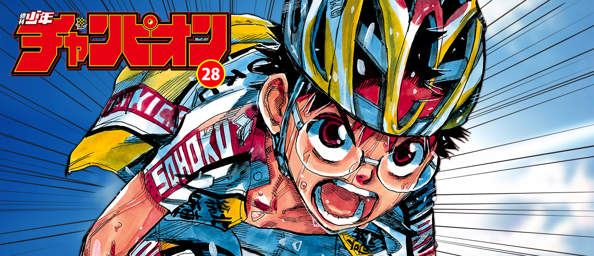
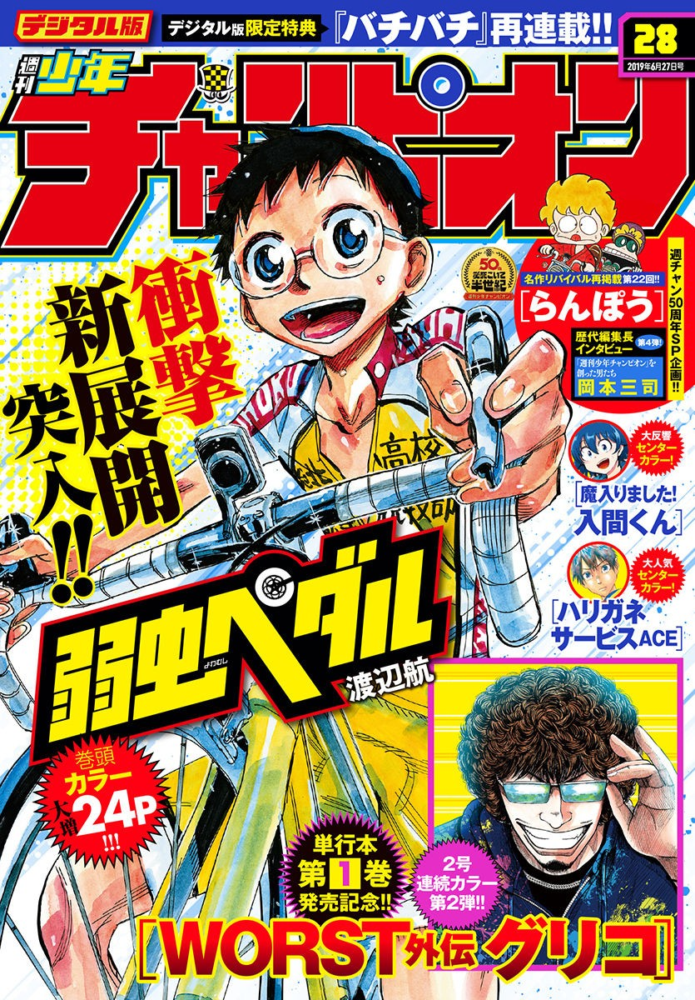
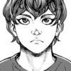
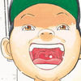

This week's Weekly Shonen Champion posting order & comments from the author.

Ashigei Shoujo Komura-san
Komura-san's first volume is already out! It will be encouraing if you can give me impressions!
BEASTARS

Those moments when words seem meaningless are still happy.
Yuuenchi Baki Gaiden

On Kodansha's "Novel Contemporary Special Editing Yoshikawa Prize Feature", I wrote about a mountain fiction senior, Jiro Nitta, on the page of "Sonographers from previous generations talk about...".
Worst Gaiden Guriko
Thank you for buying so many copies of the first volume! The second volume will be out on 7/8, so look forward to it!
Sachio-kun
I decided to listen to Future Funk because I didn't feel so good just listening to Progure, but it wasn't as enthusiastic as I thought.
Atsumare! Fushigi Kenkyuubu

I caught a summer cold. I am keenly aware of my weakness.
Baki Dou
For some reason, 'Don't Forbid Corporal Punishment!' is like a nation without police.
Appare! Urayasu Tekkin Kazoku

I acted as a referee in a big interview. It was a tense match.
Mairimashita! Iruma-kun

Mayday, mayday, air conditioner broken.
Rokudo no Onnatachi
After all, summer is all about beer gardens! I go there many times every year.
Boryaku no Panzer

First volume is on sale! Look out for an extra story of Arumi-chan!
Harigane Service Ace

I wonder where I can buy nakamuraemi's songs.
'Ippon' Again
I cannot stop eating chocolate at nights.
Magical Girl Site
The assistants were talking this week.
The Vampire Dies in No Time

I would like to play some VR game, but it's hard for me to leave Splatoon.
Rororro!

I went to the library. I want to become smarter!
1
I started vomiting after staying up all night.
Junior

There's a lot of earthquakes and I'm scared!
Himawari
I was inspired by Utagawa Kuniyoshi's exhibition.
Kiri-chan to Non
This is my 3rd appearence here. I am really honored to see you all again! Hope you enjoy this work.
Furutto on Thursday
The homemade kimchi I got from a my dog's friend returnee was delicious. I re-used it in various ways.
Yowamushi Pedal
Wataru Watanabe
The first mountain biker to finish in Giro de Italia is really popular in Italy! That's great! Good work!